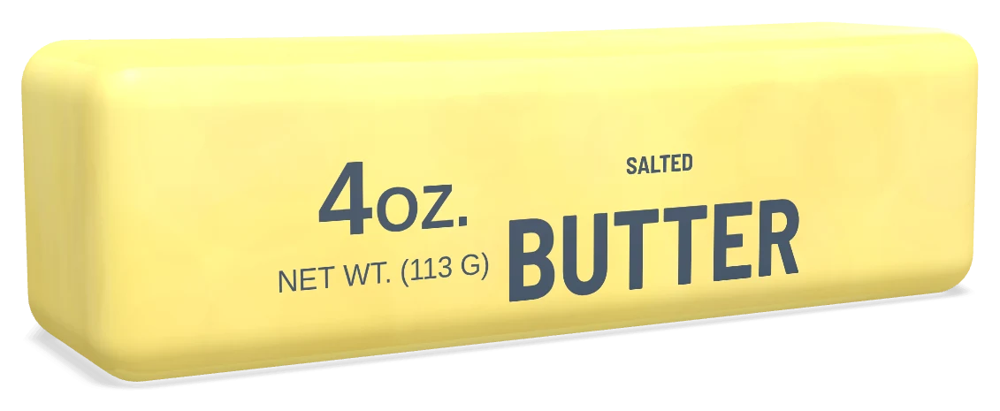

Or press it yourself
Close-ups
Sound is off to start. The toy itself is almost silent; the sound here is generated in your browser, quiet and soft, for the close-ups.
Listen closely. That's all there is.
A slow-rise squeeze toy makes almost no sound. You hear your own skin on a soft, slightly tacky surface, and then nothing while the dent fills back in.
That's why it works in a library, a classroom or a call: the fidget no one else notices.
SilentNo click, no squeak
SlowA few seconds to rise
45 gLight, sits flat
13.5 cmA real stick's length

Butter Squish
$6.99
Not food; not for children under 3. Don't fold it in half. Arrives .
"I put the close-ups on before bed. Then I bought one."
Sample review"Genuinely silent. My open-plan office has no idea."
Sample review"Cool to the touch and slightly sticky, in a good way."
Sample review